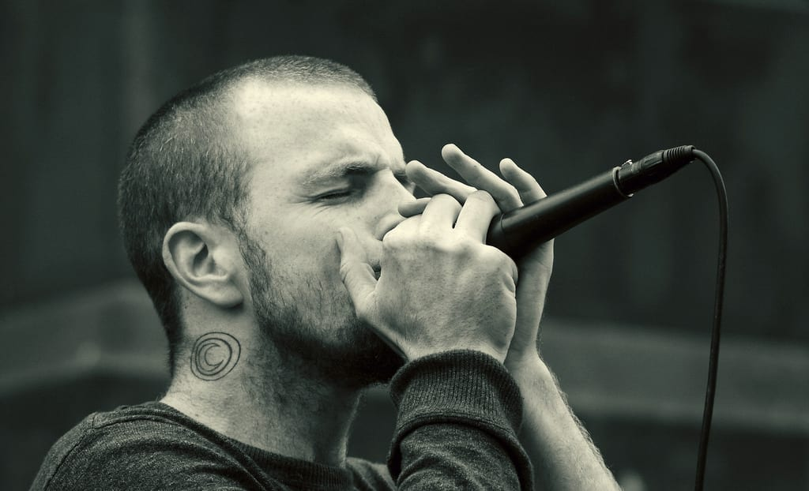
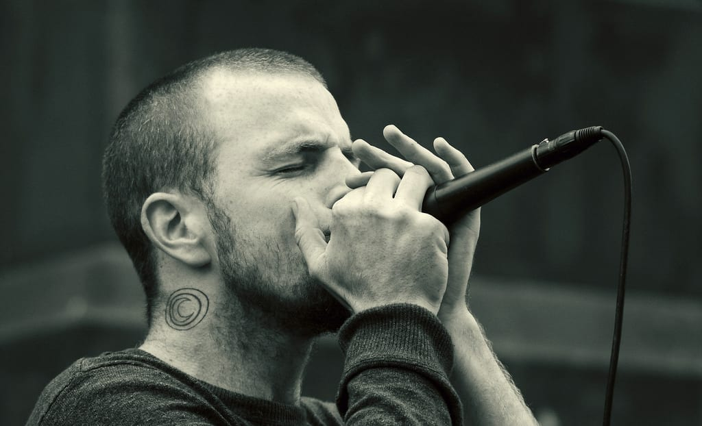

Le Hip-Hop est un mouvement artistique créé dans les rues. Cet art de rue a été créé par Clive Campbell surnommé DJ Kool Herc, un Disc Jockey américano-jamaïcain.

Ensuite, les autres djs américains Lance Taylor et Joseph Sladder ont amélioré le hip hop.

Il est apparu dans les années 1970 dans les ghettos de la ville de New York (Brooklyn, Harlem, Bronx). Le Hip veut dire d'être débrouillard en ayant confiance en soi et le Hop signifie d'aller en avant pour s'exprimer sans crainte, de montrer ses idées et sa créativité.

Au début, Le hip hop a été utilisé par les griots africains. Les griots africains ont utilisé le rap lors de l'esclavage en Amérique. Ils ont rappé dans les plantations et dans les cabanes pour leurs enfants. Même, le rap a été pris par les afros-américains. Ensuite, dans les années 1960, les industries étaient démolies dans les ghettos. Donc, les blancs ont quitté ces quartiers américains. Puis, les gens pauvres et démunis (Les Afros-Américains) ont habité dans ces endroits. Ces citoyens pauvres ont décidé de se lancer sur le Hip-Hop. Alors, les rappeurs, les tagueurs, les beatboxers, les DJs ,les musiciens et les danseurs se sont rassemblés pour rendre le hip hop meilleur.Par exemple, ils ont trouvé des aspects positifs. Comme: l'amour, la musique, la paix, la religion, le graffiti, aucune drogue et pas de violence.
Les meilleurs du début, les voici dans l'ordre: le rappeur Snoop Dog, le tagueur, le beatboxer et Le danseur
 
